In Chapter 4 the authors classified movie reviews with pretrained models that they never changed ("frozen"). This chapter asks what happens if you do change them. First they fine-tune a whole BERT model plus a small classification head on the Rotten Tomatoes reviews and get an F1 score of 0.85 (Chapter 4 got 0.80), then show that freezing layers saves compute but costs accuracy. Next comes SetFit, which fine-tunes a sentence-embedding model from only 32 labeled reviews and still scores about 0.84. Then continued pretraining: keep training BERT with masked language modeling on your own domain text before fine-tuning, so it learns your vocabulary. Finally, named-entity recognition (NER): classify every token instead of the whole document, which needs a careful trick to line word labels up with sub-word tokens.
The chapter is four experiments on the same base model (bert-base-cased), each answering a "but what if…" left open by the previous one. Read the rows top to bottom; the orange boxes are the ideas each row reacts to.
SetFit (box 2) actually starts from a different base model, all-mpnet-base-v2; it is drawn under the same root because it is still a BERT-like encoder.
In Chapter 4 the authors classified text with pretrained models and kept them exactly as they were: no weights changed. That leaves an obvious question: what happens if we fine-tune them, meaning we keep training a pretrained model on our own labeled data so its weights adapt to our task?
The book's answer up front: if you have enough data, fine-tuning tends to give some of the best-performing models possible. The chapter then works through several methods and applications of fine-tuning BERT models (BERT = Bidirectional Encoder Representations from Transformers, an encoder-only representation model):
The page numbers in that list are the book's printed numbers; on this page they are plates 2–4, 5–7, 8–9 and 10–12. The chapter sticks to nongenerative tasks (the model outputs a label, not new text). Generative models get their fine-tuning chapter next, in Chapter 12.
| Section | Labels needed | What gets trained | Output |
|---|---|---|---|
| Supervised classification | one per document, thousands | BERT + classification head | one label per document |
| SetFit | a few per class (16 here) | sentence-embedding model, then a classifier | one label per document |
| Continued pretraining | none (raw domain text) | BERT with its MLM head | a better starting model |
| NER | one per word | BERT + token classification head | one label per token |
A new hire who already graduated (pretraining) joins your company. Chapter 4 was asking them questions without any onboarding. Fine-tuning is onboarding: they practise on your real tickets until their instincts match your needs. SetFit is onboarding with only a handful of examples; continued pretraining is making them read your internal wiki first; NER is training them to highlight names in every line instead of just stamping a verdict on the whole document. Where it breaks: a person keeps their old knowledge safely; a model's weights are overwritten during training, so pushing too hard on narrow data can damage general skills.
In Chapter 4, supervised classification (learning from labeled examples) used two kinds of pretrained representation models (models that turn text into numbers rather than generate text):
Both were kept frozen, meaning nontrainable: their weights never changed. The point there was to show how far you can get with pretrained models alone. Only the small classifier after the embedding model learned anything.
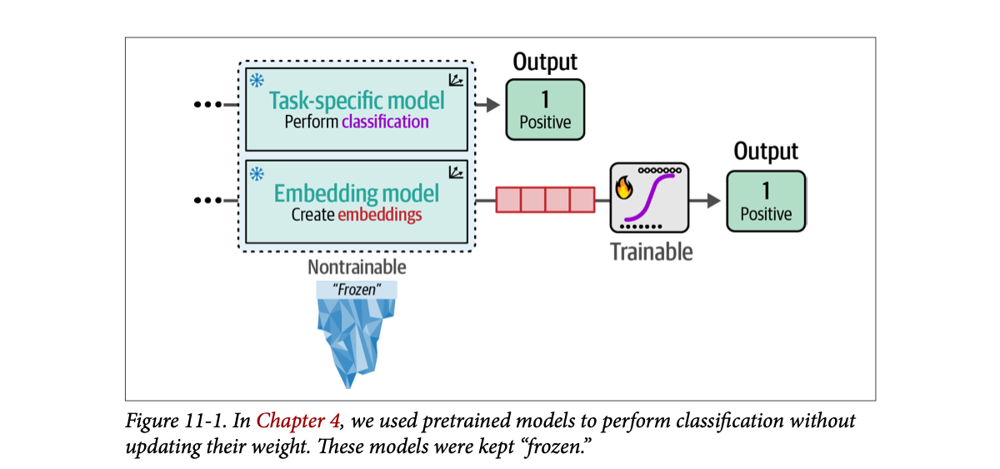
How to read this figure. The snowflake icons and the iceberg mark the parts that are frozen: both the task-specific model (top) and the embedding model (bottom) sit inside the dashed "Nontrainable" box. The top model goes straight to an output ("1, Positive"). The bottom model emits a red embedding vector that feeds a small box with a flame icon (trainable) and an S-shaped curve (a logistic-regression classifier), which then outputs "1, Positive". Flame = learns, snowflake = doesn't.
In this chapter the approach is similar, but both the model and the classification head are updated during training. Instead of an embedding model plus a separate classifier, they fine-tune a pretrained BERT model into a task-specific model, like the one used in "Chapter 2" (the book's wording; the task-specific model was used in Chapter 4). Compared with the embedding-model approach, the representation model and the classification head are fine-tuned as a single architecture.
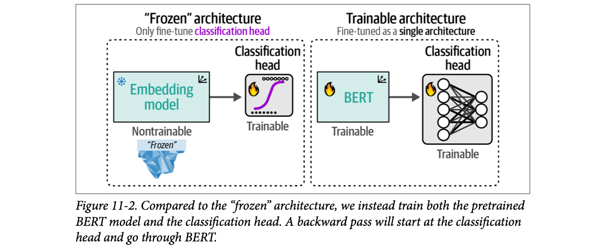
How to read this figure. Left panel ("Frozen" architecture, only the classification head is fine-tuned): the embedding model has a snowflake; only the logistic-regression head has a flame. Right panel (Trainable architecture, fine-tuned as a single architecture): BERT now has a flame too, and the head is drawn as a small neural network (circles connected by lines). The caption's key phrase is backward pass: during training, the error signal (gradients) starts at the head and flows back through BERT, so BERT's weights change as well.
To do this, the model is not frozen: it is allowed to be trainable, so its parameters are updated during training. A pretrained BERT model gets a neural network on top as a classification head, and both are fine-tuned for classification.
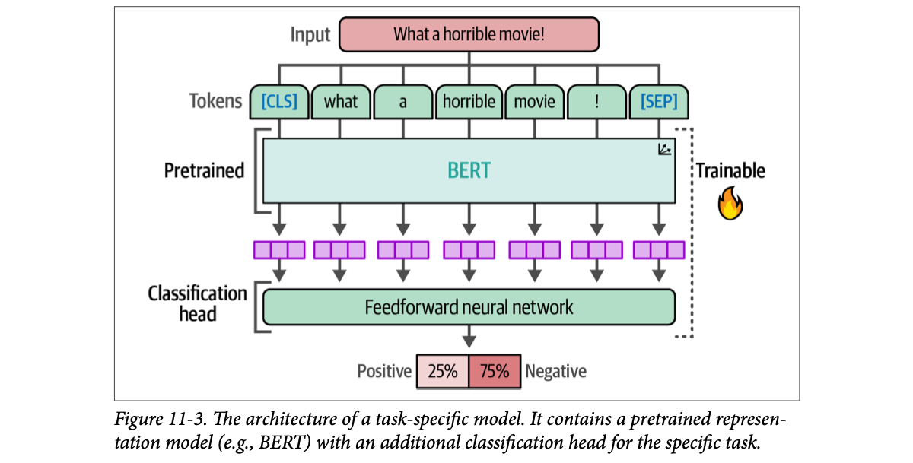
How to read this figure. Top to bottom: the input "What a horrible movie!" is split into tokens, with the special tokens [CLS] (start, "classification") and [SEP] (end, "separator") added. The pretrained BERT block turns each token into a purple embedding vector. The classification head, a feedforward neural network, takes those embeddings and outputs a probability for each class: Positive 25%, Negative 75%. The dashed bracket on the right labelled "Trainable" with a flame covers both BERT and the head.
In practice this means the pretrained BERT model and the classification head are updated jointly. They are not independent processes: they learn from one another, which allows for more accurate representations. BERT's vectors shift to make the head's job easier, and the head adapts to the shifting vectors.
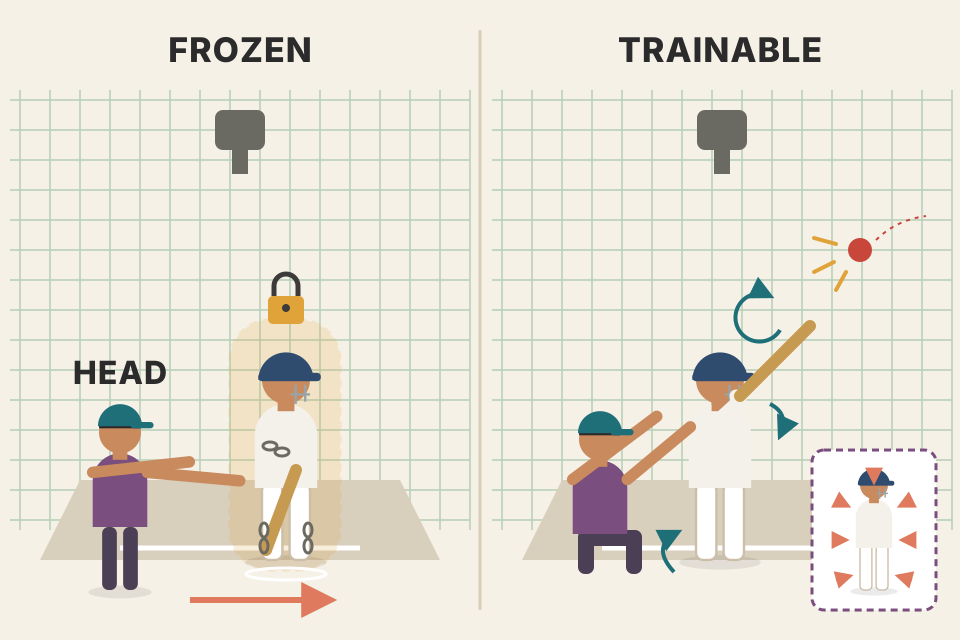
A cricket team where the batting coach (head) and the batter (BERT) work together. In the frozen setup the batter's technique is locked; the coach can only change where the batter stands. In the trainable setup, the coach's feedback reaches the batter's actual technique: footwork, grip, timing. Where it breaks: real players can push back or ignore advice; in a network, every weight that has requires_grad=True is nudged by every gradient whether that helps in general or not.
Training means: forward pass (text → probabilities), compute a loss against the true label (cross-entropy for classification), then a backward pass that computes, for every trainable weight, how much it contributed to the error, and the optimizer nudges it. A frozen parameter simply gets no update. With BERT trainable, roughly 108 million weights move instead of about 1,500 (beyond the book: computed from the bert-base-cased layer sizes, see plate 4). That is why it is slower but fits the task much better.
"What's the difference between using embeddings + a classifier and fine-tuning BERT?" With embeddings + classifier the encoder is frozen, so you only learn a decision boundary in a fixed vector space; it's cheap and you can reuse one embedding for many tasks. Full fine-tuning back-propagates through the encoder, so the vector space itself reshapes around your labels, which usually wins on accuracy when you have a few thousand labels, at the cost of a separate model per task and GPU training.
The data is the same as in Chapter 4: the Rotten Tomatoes dataset, 5,331 positive and 5,331 negative movie reviews. It comes already split into train and test sets.
from datasets import load_dataset
# Prepare data and splits
tomatoes = load_dataset("rotten_tomatoes")
train_data, test_data = tomatoes["train"], tomatoes["test"]The base model is bert-base-cased, pretrained on English Wikipedia plus a large dataset of unpublished books (footnote 1: Devlin et al., the BERT paper, 2018). "Cased" means it keeps capital letters (so "Apple" and "apple" are different tokens).
You must say how many labels you want to predict before loading. This is needed to build the feedforward neural network (the head) that goes on top of the pretrained model: its output layer needs one unit per label.
from transformers import AutoTokenizer, AutoModelForSequenceClassification
# Load model and tokenizer
model_id = "bert-base-cased"
model = AutoModelForSequenceClassification.from_pretrained(
model_id, num_labels=2
)
tokenizer = AutoTokenizer.from_pretrained(model_id)AutoModelForSequenceClassification: loads BERT's pretrained body and adds a fresh, randomly initialised classification head for whole sequences (documents).num_labels=2: positive and negative, so the head outputs 2 numbers (logits).AutoTokenizer: the matching tokenizer, which knows BERT's WordPiece vocabulary and adds [CLS]/[SEP].from transformers import DataCollatorWithPadding
# Pad to the longest sequence in the batch
data_collator = DataCollatorWithPadding(tokenizer=tokenizer)
def preprocess_function(examples):
"""Tokenize input data"""
return tokenizer(examples["text"], truncation=True)
# Tokenize train/test data
tokenized_train = train_data.map(preprocess_function, batched=True)
tokenized_test = test_data.map(preprocess_function, batched=True)Before creating the trainer, they prepare a DataCollator: a class that builds batches of data and can also apply data augmentation. During tokenization (as shown in Chapter 9) padding is added so every input in a batch has the same length, because tensors must be rectangular. DataCollatorWithPadding does this dynamically: it pads each batch only to the longest sequence in that batch. truncation=True cuts any text longer than the model's maximum length (512 tokens for BERT).
Each row is one review in a batch of 4 (token counts are modelled). Grey cells are [PAD] tokens: wasted compute.
import numpy as np
from datasets import load_metric
def compute_metrics(eval_pred):
"""Calculate F1 score"""
logits, labels = eval_pred
predictions = np.argmax(logits, axis=-1)
load_f1 = load_metric("f1")
f1 = load_f1.compute(predictions=predictions, references=labels)["f1"]
return {"f1": f1}The model outputs logits (raw scores, one per class). np.argmax(..., axis=-1) picks the class with the highest score for each review. The F1 score combines precision and recall (it is their harmonic mean). With compute_metrics you can define any number of metrics, which are printed or logged during training. This is especially helpful because it lets you detect overfitting (training loss keeps dropping while the test metric stops improving or falls).
datasets.load_metric was deprecated and later removed from the datasets library; current code uses evaluate.load("f1"), the same package the book itself uses later for NER (plate 11).
Out of 1,066 test reviews (the Rotten Tomatoes test split has 533 + 533), drag how many of each kind the model gets right. "Positive" is the class F1 is computed for.
Modelled counts; the 450 / 76 defaults are chosen to land near the book's 0.85.
from transformers import TrainingArguments, Trainer
# Training arguments for parameter tuning
training_args = TrainingArguments(
"model",
learning_rate=2e-5,
per_device_train_batch_size=16,
per_device_eval_batch_size=16,
num_train_epochs=1,
weight_decay=0.01,
save_strategy="epoch",
report_to="none"
)
# Trainer which executes the training process
trainer = Trainer(
model=model,
args=training_args,
train_dataset=tokenized_train,
eval_dataset=tokenized_test,
tokenizer=tokenizer,
data_collator=data_collator,
compute_metrics=compute_metrics,
)TrainingArguments holds the hyperparameters you want to tune, such as the learning rate and the number of epochs (rounds through the full training set). The Trainer runs the training process.
| Argument | Value | What it means |
|---|---|---|
"model" | — | output folder for checkpoints |
learning_rate | 2e-5 | how big each weight nudge is (0.00002); small, because the pretrained weights are already good and big steps would wreck them |
per_device_train_batch_size | 16 | 16 reviews per training step on each GPU |
per_device_eval_batch_size | 16 | 16 reviews per evaluation step |
num_train_epochs | 1 | one pass over the training data |
weight_decay | 0.01 | a small pull of weights toward zero, a regulariser against overfitting |
save_strategy | "epoch" | save a checkpoint after each epoch |
report_to | "none" | don't send logs to tools like Weights & Biases |
trainer.evaluate()
{'eval_loss': 0.3663691282272339,
'eval_f1': 0.8492366412213741,
'eval_runtime': 4.5792,
'eval_samples_per_second': 232.791,
'eval_steps_per_second': 14.631,
'epoch': 1.0}The printed listing shows only trainer.evaluate(); a trainer.train() call must run first (the book writes "we can train our model and evaluate it", and shows trainer.train() explicitly in the later examples).
Result: F1 = 0.85, quite a bit higher than the task-specific model of Chapter 4, which scored 0.80. It shows that fine-tuning a model yourself can beat using a pretrained model as is, and it only costs a couple of minutes of training.
The training split has about 8,530 reviews (the book later says "roughly 8,500"). With batch size 16: 8,530 / 16 ≈ 534 optimisation steps for one epoch. The evaluation output says 232.8 samples/second over 4.58 s ≈ 1,066 test reviews, which is exactly the test split (533 + 533). At 14.6 steps/s × 4.58 s ≈ 67 eval steps of 16.
Setting up the Trainer is like booking a railway journey: TrainingArguments is the ticket (class, train number, date = learning rate, batch size, epochs), the data collator is the porter who packs luggage into equal-sized trolleys, compute_metrics is the TTE (travelling ticket examiner) checking progress at each station, and Trainer.train() is the train actually leaving. Where it breaks: a train's route is fixed; in training you often stop, change the ticket (hyperparameters) and run again.
Why only 2e-5 and 1 epoch? The pretrained weights already encode a lot of language. Fine-tuning only has to make small adjustments so the [CLS]-based sentence representation separates positive from negative reviews. Large learning rates or many epochs on 8.5k examples risk catastrophic forgetting (beyond the book's wording: overwriting general knowledge) and overfitting. The head is new and random, but it is tiny, so it learns quickly even at a small learning rate.
"Walk me through fine-tuning BERT for sentiment." Load the dataset; load AutoModelForSequenceClassification with num_labels; tokenize with truncation; use DataCollatorWithPadding for per-batch dynamic padding; define a compute_metrics (F1) to watch for overfitting; set TrainingArguments (lr ≈ 2e-5, batch 16, a few epochs, weight decay); Trainer.train() then evaluate(). On Rotten Tomatoes this goes from 0.80 (off-the-shelf) to 0.85 F1 in a few minutes.
To show why training the entire network matters, the authors next use Hugging Face Transformers to freeze certain layers. First they freeze all of BERT and let updates reach only the classification head. Everything else stays identical (same data, same arguments), so it is a clean comparison: the only change is which layers can learn.
They start from scratch by reloading the model (otherwise they would be freezing an already fine-tuned model):
# Load model and tokenizer
model = AutoModelForSequenceClassification.from_pretrained(
model_id, num_labels=2
)
tokenizer = AutoTokenizer.from_pretrained(model_id)# Print layer names
for name, param in model.named_parameters():
print(name)
bert.embeddings.word_embeddings.weight
bert.embeddings.position_embeddings.weight
bert.embeddings.token_type_embeddings.weight
bert.embeddings.LayerNorm.weight
bert.embeddings.LayerNorm.bias
bert.encoder.layer.0.attention.self.query.weight
bert.encoder.layer.0.attention.self.query.bias
...
bert.encoder.layer.11.output.LayerNorm.weight
bert.encoder.layer.11.output.LayerNorm.bias
bert.pooler.dense.weight
bert.pooler.dense.bias
classifier.weight
classifier.biasReading the list top to bottom: embeddings (word, position, token-type, and a LayerNorm), then 12 encoder blocks numbered 0–11, each made of attention heads, dense (feedforward) networks and layer normalization, then the pooler (a dense layer over the [CLS] vector) and finally the classifier, which is our classification head.
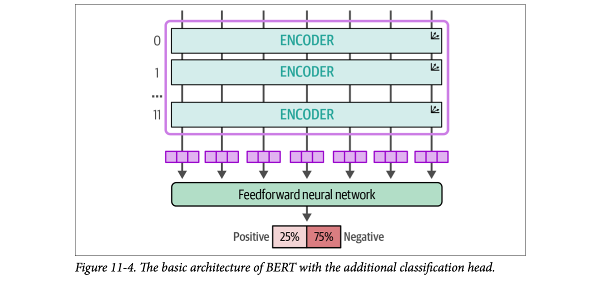
How to read this figure. This zooms inside the "BERT" box of Figure 11-3. Each token's vertical line passes through encoder 0, encoder 1, … encoder 11 (the purple outline groups all 12). Out of the last block come one purple vector per token, which feed the feedforward head that produces the class probabilities. Everything in the purple box, plus the embeddings below it, is a candidate for freezing.
model.named_parameters()
BERT-base has 201 named parameter tensors in this model. Slide the index to see which tensor each one is; this is what the book's index < 165 trick counts.
The list is rebuilt from the layer naming the book prints (5 embedding tensors, 16 per encoder block, 2 pooler, 2 classifier). The shapes are from the standard bert-base-cased configuration (beyond the book).
You could freeze only some layers to speed up computing while still letting the main model learn from the classification task. The book's rule of thumb: generally, we want frozen layers to be followed by trainable layers (freeze the bottom, train the top), because gradients flow from the head downward.
for name, param in model.named_parameters():
# Trainable classification head
if name.startswith("classifier"):
param.requires_grad = True
# Freeze everything else
else:
param.requires_grad = Falserequires_grad is PyTorch's switch for "compute a gradient for this tensor". Set to False, the optimizer never updates it. This is the setup the book calls "as we did in Chapter 2" (it was Chapter 4's embedding + classifier idea): only the feedforward head learns.
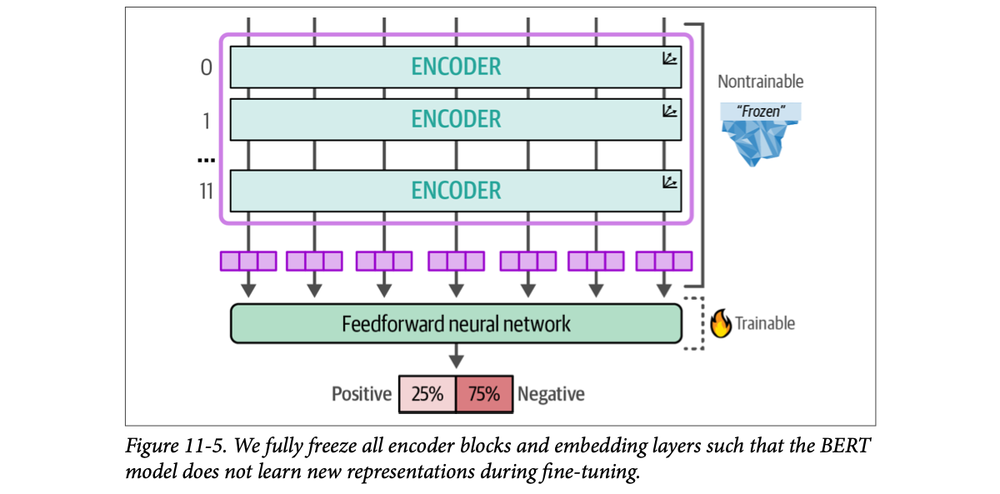
How to read this figure. Same drawing as Figure 11-4, now with a solid bracket on the right labelled "Nontrainable, Frozen" (iceberg) covering all encoders 0–11 and their outputs, and a short dashed bracket with a flame, "Trainable", only next to the feedforward neural network. The token vectors coming out of BERT will be the same before and after training.
trainer = Trainer(model=model, args=training_args,
train_dataset=tokenized_train, eval_dataset=tokenized_test,
tokenizer=tokenizer, data_collator=data_collator,
compute_metrics=compute_metrics)
trainer.train()
trainer.evaluate()
{'eval_loss': 0.6821751594543457,
'eval_f1': 0.6331058020477816,
'eval_runtime': 4.0175,
'eval_samples_per_second': 265.337,
'eval_steps_per_second': 16.677,
'epoch': 1.0}Training becomes much faster, because only the head is trained. But the F1 drops to 0.63, far below the 0.85 of full fine-tuning. (Note the eval loss too: 0.68 is close to ln 2 ≈ 0.69, the loss of a coin-flip guesser, so after one epoch the head alone has barely learned.)
Instead of freezing nearly everything, they freeze everything up until encoder block 10. A major benefit is that this reduces computation but still allows updates to flow through part of the pretrained model.
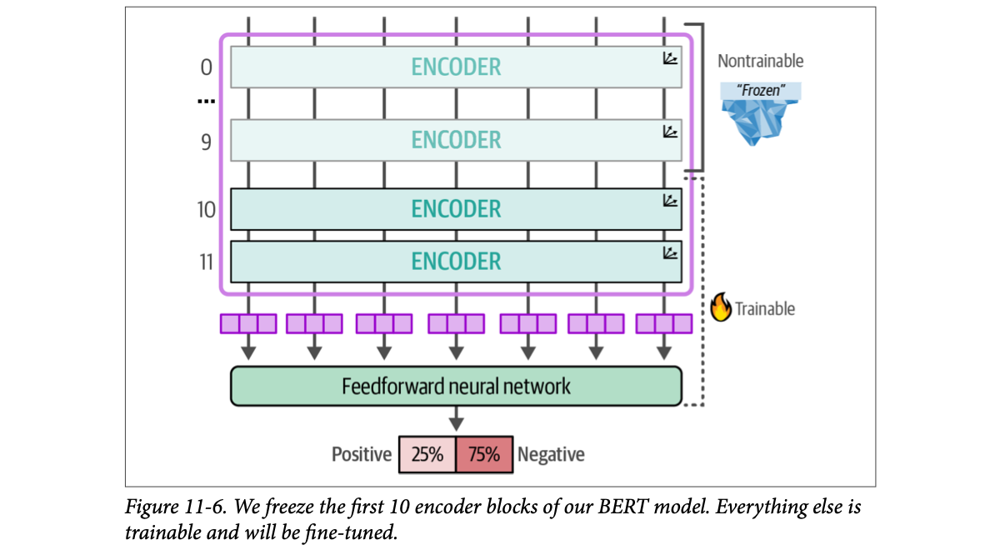
How to read this figure. Encoders 0 to 9 are drawn pale and sit under the "Nontrainable, Frozen" bracket. Encoders 10 and 11 are drawn in full colour and, together with the token vectors and the feedforward head, sit under the dashed "Trainable" bracket with the flame. That is "frozen layers followed by trainable layers" in a picture.
# Load model
model_id = "bert-base-cased"
model = AutoModelForSequenceClassification.from_pretrained(
model_id, num_labels=2
)
tokenizer = AutoTokenizer.from_pretrained(model_id)
# Encoder block 11 starts at index 165 and
# we freeze everything before that block
for index, (name, param) in enumerate(model.named_parameters()):
if index < 165:
param.requires_grad = False
# Trainer which executes the training process
trainer = Trainer(...same arguments...)
trainer.train()
trainer.evaluate()
{'eval_loss': 0.40812647342681885,
'eval_f1': 0.8,
'eval_runtime': 3.7125,
'eval_samples_per_second': 287.137,
'eval_steps_per_second': 18.047,
'epoch': 1.0}Count it: 5 embedding tensors, then 16 tensors per encoder block, so block i starts at index 5 + 16·i. Index 165 is bert.encoder.layer.10..., the 11th block counting from one. So index < 165 freezes the embeddings and blocks 0–9 (ten blocks), and leaves blocks 10 and 11, the pooler and the classifier trainable. That matches Figure 11-6 and the text ("the first 10 encoder blocks"); the code comment just counts blocks from one. Check it with the index slider above.
Result: F1 = 0.80, much better than 0.63 with everything frozen. Lesson: you generally want to train as many layers as possible, but you can get away with training fewer if you don't have the compute.
To show the effect more fully, they repeated this for different numbers of trainable encoder blocks. As Figure 11-7 shows, training only the first five encoder blocks (the red vertical line) is enough to almost reach the performance of training all of them.
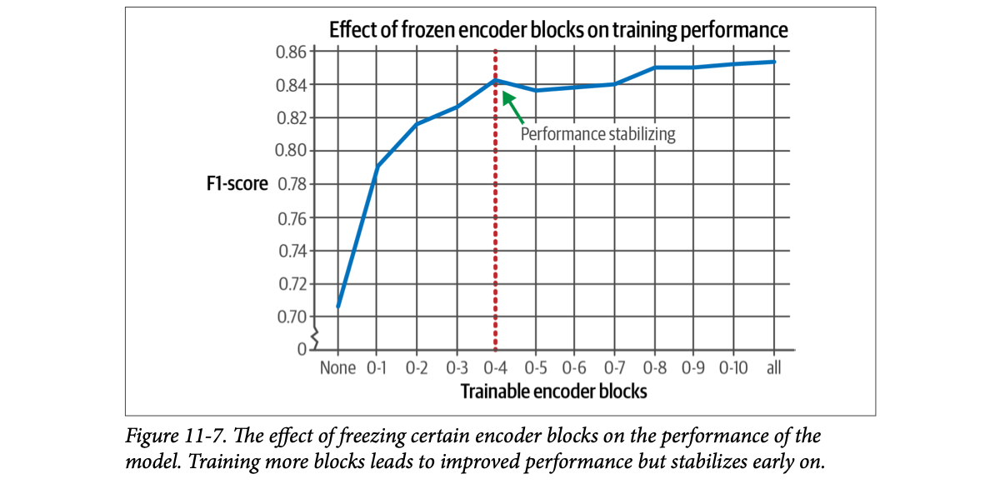
How to read this figure. X-axis: which encoder blocks were trainable, from "None" through "0-1", "0-2" … "0-10" to "all". Y-axis: F1 score (note the broken axis: it starts at 0.70, not 0). The curve climbs steeply at first (≈0.70 → ≈0.79 → ≈0.82), reaches ≈0.84 at "0-4", where a red dotted line and a green arrow say "Performance stabilizing", and then only creeps up to ≈0.85 for "all". Most of the gain comes from the first few trainable blocks; the rest is diminishing returns.
(1) The "None" point of Figure 11-7 sits near 0.70, while Experiment A printed 0.63; the figure is presumably a separate set of runs, and the book doesn't explain the gap. (2) The axis labels say blocks "0-4" are trainable and the text says "the first five encoder blocks", while the code in Experiment B trains the last blocks. The book doesn't say which end the sweep unfroze; read the chart as "how many blocks are trainable".
Choose how many encoder blocks are trainable. The stack follows the book's code style (bottom frozen, top trainable). F1 is read off Figure 11-7 by eye; the trainable-parameter count is computed from bert-base-cased's layer sizes (beyond the book).
When you train for multiple epochs, the gap in training time and resources between freezing and not freezing usually gets larger. So experiment to find the balance that works for you.
A big kirana shop's ledger system: the bottom layers are the shop's basic bookkeeping rules (how to write dates, add columns), the top layers are "which customers buy on credit". For a new branch you don't rewrite basic bookkeeping; you retrain the top layer of habits. Freezing everything (Experiment A) is forcing the new branch to use the old customer habits and only change the final yes/no stamp. Where it breaks: in a shop you can see which rule lives where; in BERT, "low layers = general, high layers = task-ish" is a tendency, not a clean division.
Freezing saves work in two ways: frozen weights need no optimizer state (Adam keeps two extra numbers per trainable weight), and if all frozen layers are at the bottom, the backward pass can stop where the frozen region begins, so you skip computing gradients through those blocks. That is why "frozen followed by trainable" is the efficient arrangement: freezing a block in the middle still forces gradients to pass through it to reach the trainable blocks below. The F1 curve flattens because the lower blocks mostly hold general language features that are already useful for sentiment.
| Setup | Trainable tensors | Trainable weights (computed) | F1 (book) |
|---|---|---|---|
| All trainable (plate 3) | 201 | ≈108.3 M | 0.85 |
| Blocks 10–11 + pooler + head (B) | 36 | ≈14.8 M (13.6%) | 0.80 |
| Head only (A) | 2 | 1,538 | 0.63 |
Weight counts are beyond the book: 768-wide hidden size, 3,072-wide feedforward, 28,996-token vocabulary, 512 positions. One encoder block ≈ 7.09 M weights; embeddings ≈ 22.7 M; pooler 0.59 M; head 768×2 + 2.
"You have a small GPU budget. How do you fine-tune a 110M encoder?" Freeze the embeddings and the lower encoder blocks and train the top few plus the head; that cuts gradient computation and optimizer memory, and in the book's experiment training a handful of blocks gets close to full fine-tuning (0.80–0.84 vs 0.85) while head-only collapses to 0.63. Keep frozen layers at the bottom so the backward pass can stop early. (Beyond the book: the modern alternative is a parameter-efficient method like LoRA, covered in Ch.12.)
Few-shot classification is a technique within supervised classification where the classifier learns the target labels from only a few labeled examples. It is great when you have a classification task but not many labeled data points readily available. Put differently: you label a few high-quality data points per class and train on those.
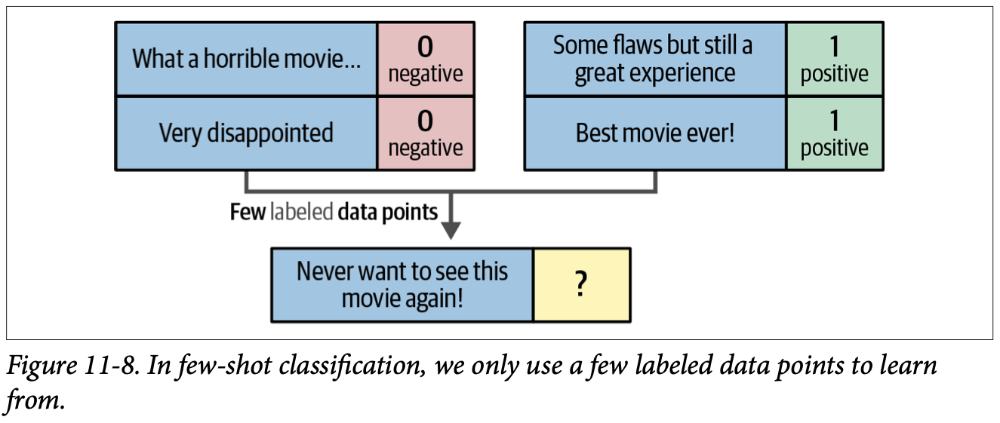
How to read this figure. Four labeled examples at the top: "What a horrible movie…" (0, negative), "Very disappointed" (0, negative), "Some flaws but still a great experience" (1, positive), "Best movie ever!" (1, positive). Arrows merge into "Few labeled data points", which are used to predict the yellow "?" for a new review, "Never want to see this movie again!". The whole training set is those four rows.
A new cashier at a sweet shop learns to sort orders from a few examples the owner shows on day one: "this is a bulk wedding order, this is a walk-in". She doesn't need 8,000 past orders because she already understands language and context. Where it breaks: the cashier can ask questions when unsure; a few-shot model just guesses, so the few examples must be clean and representative.
Few-shot works because the model is pretrained: it already places similar sentences near each other. The few labels only need to tell it which direction in that space matters for your classes. With full fine-tuning (plate 3) on only 32 examples, a 108M-parameter model would overfit badly; SetFit (next plate) avoids that by turning 32 labels into many training pairs.
"You need an intent classifier for a new product but have almost no labels. Options?" Zero-shot with an LLM prompt or embedding similarity to label names; few-shot prompting; or few-shot fine-tuning like SetFit, which needs ~8–16 labeled examples per class and gives a small, fast encoder you can serve cheaply. I'd label a few high-quality examples per intent first, because few-shot quality depends on them heavily.
For few-shot text classification the book uses an efficient framework called SetFit (footnote 2: Tunstall et al., "Efficient few-shot learning without prompts", 2022). It is built on top of the sentence-transformers architecture, which produces high-quality text representations (sentence embeddings), and these representations are updated during training. With only a few labeled examples, SetFit can be competitive with fine-tuning a BERT-like model on a large labeled dataset, like the previous example.
The algorithm has three steps:
Fine-tuning an embedding model needs data in the form of positive and negative sentence pairs. But a classification dataset isn't labeled that way: each sentence just has a class. Take this example dataset with two categories, text about programming languages and text about pets:
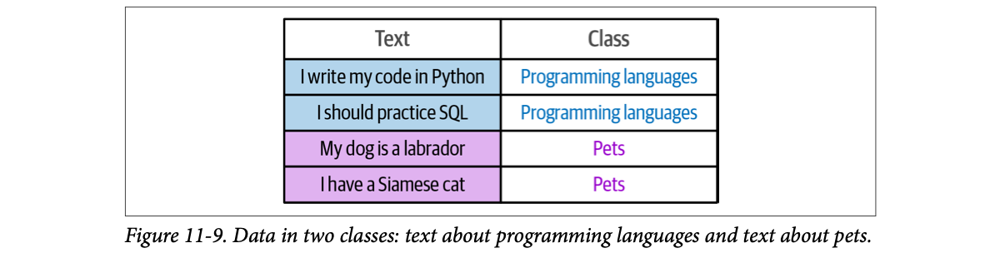
How to read this figure. A plain classification table: two blue rows (Python, SQL) belong to "Programming languages", two purple rows (labrador, Siamese cat) to "Pets". This is the kind of data you normally have: one label per sentence, no pairs.
SetFit creates the pairs by in-class and out-class selection: any two sentences from the same class become a positive pair; any two from different classes become a negative pair. For example, with 16 sentences about sports you can create 16 × (16 − 1) / 2 = 120 positive pairs. Negative pairs are collected the same way, but across classes.
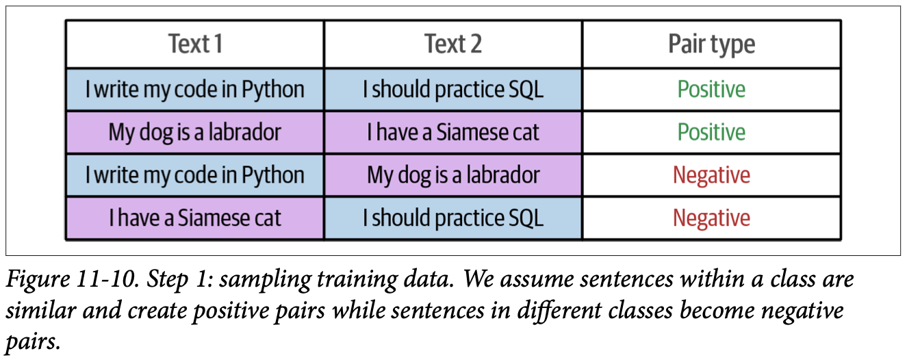
How to read this figure. Three columns: Text 1, Text 2, Pair type. Blue cells are programming sentences ("I write my code in Python", "I should practice SQL"); purple cells are pet sentences ("My dog is a labrador", "I have a Siamese cat"). Blue + blue (Python, SQL) → Positive. Purple + purple (labrador, Siamese cat) → Positive. Blue + purple (Python, labrador) and purple + blue (Siamese cat, SQL) → Negative. The colour of the two cells tells you the pair type; no human labelled any pair.
Grid = every sentence against every other (only shown for up to 40 sentences). Green = same class (positive), red = different class (negative). Counting all possible pairs is exact maths; how many SetFit actually samples is set by num_iterations (plate 7).
The generated pairs are used to fine-tune the embedding model with contrastive learning: as reviewed in Chapter 10, it learns accurate sentence embeddings from pairs of similar (positive) and dissimilar (negative) sentences. Since step 1 made those pairs, they can fine-tune a SentenceTransformers model. Figure 11-11 is a refresher.
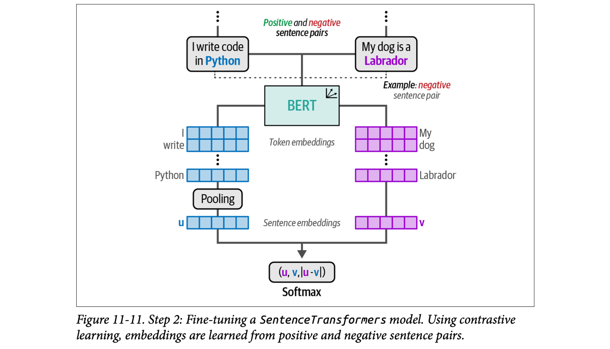
How to read this figure. One pair goes in at the top, here a negative example: "I write code in Python" and "My dog is a Labrador". Each sentence passes through the same BERT (one shared model), producing token embeddings (blue for the first sentence, purple for the second). Pooling (for example averaging) turns the token embeddings into one sentence embedding each, called u and v. The three pieces u, v and |u − v| (the element-wise difference) are concatenated and fed to a softmax classifier that predicts whether the pair is similar. Training pushes u and v apart for negative pairs and together for positive pairs.
The goal: an embedding model whose embeddings are tuned to the classification task. The relevance of the classes and their relative meaning are distilled into the embeddings by this fine-tuning.
Now generate embeddings for all sentences with the fine-tuned SentenceTransformers model and use them as features for a classifier. The classifier learns from the fine-tuned embeddings to predict unseen sentences accurately.
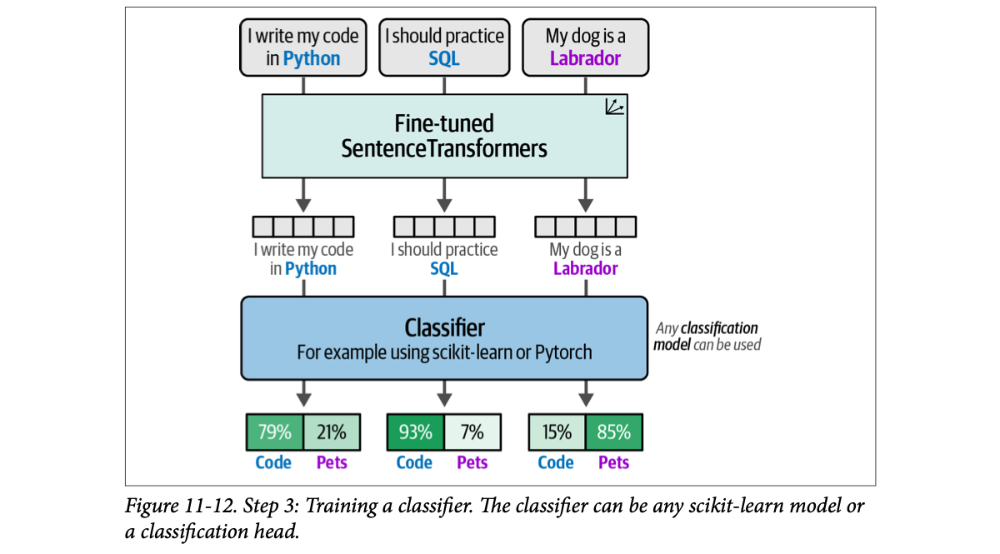
How to read this figure. Three sentences (Python, SQL, Labrador) pass through the fine-tuned SentenceTransformers model, each becoming one embedding. A classifier box ("for example using scikit-learn or PyTorch"; side note: any classification model can be used) turns each embedding into class probabilities: Python → 79% Code / 21% Pets; SQL → 93% Code / 7% Pets; Labrador → 15% Code / 85% Pets.
Put together, this is an efficient and elegant pipeline for classification when you only have a few labels per class. It cleverly uses the fact that we do have labeled data, just not in the form we'd like (pairs).
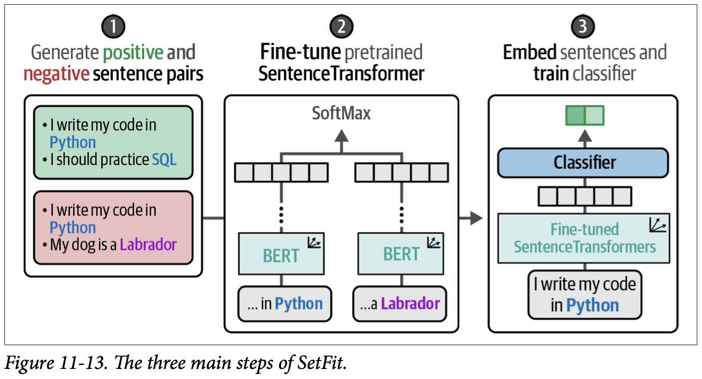
How to read this figure. Panel 1: a green box (positive pair: Python + SQL) and a red box (negative pair: Python + Labrador). Panel 2: the pair goes through BERT twice (same weights), the two embeddings go up into a SoftMax: this is contrastive fine-tuning. Panel 3: a single sentence ("I write my code in Python") goes through the fine-tuned SentenceTransformer into one embedding, then into the Classifier, which outputs the class bar. In the book's words: first, pairs from in-class and out-class selection; second, those pairs fine-tune a pretrained SentenceTransformer; third, sentences are embedded with the fine-tuned model and a classifier is trained on them.
The 2-D positions are modelled for illustration; real embeddings have 768 dimensions.
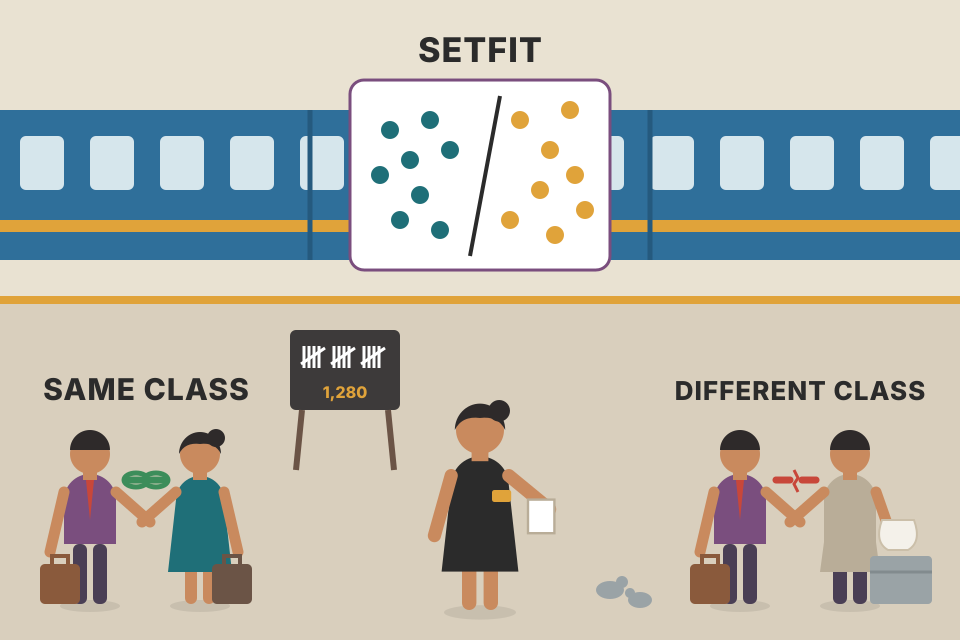
A railway ticket checker learning to tell first-class from sleeper passengers with only 16 examples of each. Instead of memorising 32 faces, she studies pairs: "these two travel the same class, these two don't". After 1,280 such comparisons she has a sharp sense of what separates the classes, and then a simple rule ("which side of the line?") does the labelling. Where it breaks: the pairs are made by assuming every member of a class is similar to every other; if a class is really two sub-groups, SetFit will still squeeze them together.
Pairing multiplies data: n labeled examples give about n²/2 pairs, so 32 sentences yield 496 possible pairs (more than 15× the examples). Contrastive learning on pairs is a much easier problem for a 110M-parameter model than direct classification from 32 rows, so it overfits far less. Once the embedding space has the classes in separate regions, even logistic regression (a straight line) separates them. Step 2 changes the "map"; step 3 just draws the border.
"Explain SetFit in 30 seconds." SetFit does few-shot classification in three steps: build positive pairs from same-class examples and negative pairs from different classes; contrastively fine-tune a sentence-transformer on those pairs so the embedding space separates the classes; then train a light classifier (logistic regression by default) on the new embeddings. No prompts, a small model, and with 16 examples per class it matched full fine-tuning-level F1 in the book.
The earlier example trained on roughly 8,500 movie reviews. For a few-shot setting they sample only 16 examples per class: with 2 classes, just 32 documents.
from setfit import sample_dataset
# We simulate a few-shot setting by sampling 16 examples per class
sampled_train_data = sample_dataset(tomatoes["train"], num_samples=16)Next, a pretrained SentenceTransformer model to fine-tune. The sentence-transformers documentation lists pretrained models; they choose sentence-transformers/all-mpnet-base-v2, one of the best-performing models on the MTEB leaderboard (Massive Text Embedding Benchmark), which ranks embedding models across many tasks.
from setfit import SetFitModel
# Load a pretrained SentenceTransformer model
model = SetFitModel.from_pretrained("sentence-transformers/all-mpnet-base-v2")Then the SetFitTrainer. By default, a logistic regression model is the classifier that gets trained. As with Hugging Face Transformers, the trainer holds the parameters you play with. Here num_epochs=3 means contrastive learning runs for three epochs:
from setfit import TrainingArguments as SetFitTrainingArguments
from setfit import Trainer as SetFitTrainer
# Define training arguments
args = SetFitTrainingArguments(
num_epochs=3, # The number of epochs to use for contrastive learning
num_iterations=20 # The number of text pairs to generate
)
args.eval_strategy = args.evaluation_strategy
# Create trainer
trainer = SetFitTrainer(
model=model,
args=args,
train_dataset=sampled_train_data,
eval_dataset=test_data,
metric="f1"
)as SetFitTrainingArguments / as SetFitTrainer: renamed on import so they don't clash with the Transformers classes of the same name used earlier.num_iterations=20: how many sentence pairs to generate per labeled example (see the maths below).args.eval_strategy = args.evaluation_strategy: a one-line compatibility shim for the library version the book used; it copies one argument name to the other.metric="f1": evaluate with F1, like the earlier examples.# Training loop
trainer.train()
***** Running training *****
Num unique pairs = 1280
Batch size = 16
Num epochs = 3
Total optimization steps = 240The output says 1,280 sentence pairs were generated to fine-tune the SentenceTransformer. By default 20 sentence-pair combinations are generated for each sample, and this is multiplied by 2 because both a positive and a negative pair are generated. Generating 1,280 pairs from only 32 labeled sentences is quite impressive.
The book prints "20 * 32 = 680 samples" and then "680 * 2 = 1,280". The correct product is 20 × 32 = 640, and 640 × 2 = 1,280, which matches the training log. The step count also checks out: 1,280 pairs / batch 16 = 80 steps per epoch × 3 epochs = 240 optimisation steps.
Uses the book's rule: pairs = examples × num_iterations × 2; batch size 16. The defaults reproduce the book's log (1,280 pairs, 240 steps).
If you don't specify a classification head, logistic regression is used. To use a differentiable (neural network) head instead, load the model like this, where num_classes is the number of classes to predict:
# Load a SetFit model from Hub
model = SetFitModel.from_pretrained(
"sentence-transformers/all-mpnet-base-v2",
use_differentiable_head=True,
head_params={"out_features": num_classes},
)
# Create trainer
trainer = SetFitTrainer(
model=model,
...
)# Evaluate the model on our test data
trainer.evaluate()
{'f1': 0.8363988383349468}With only 32 labeled documents, the F1 is about 0.84 (the text rounds it to "0.85"). Given that the model saw a tiny subset of the original data, this is very impressive. The book adds that in "Chapter 2" the same performance came from a logistic regression trained on embeddings of the full data. So this pipeline shows the value of taking the time to label just a few instances well.
The printed score is 0.836, which rounds to 0.84, not 0.85. And the "embeddings + logistic regression on the full data" experiment the text refers to is the one in Chapter 4 (Figure 11-1's lower path); the book's "Chapter 2" looks like a cross-reference slip.
SetFit can also do zero-shot classification, when you have no labels at all. It generates synthetic examples from the label names that resemble the task, then trains a SetFit model on them. For labels "happy" and "sad", the synthetic data could be "The example is happy" and "This example is sad."
| Approach | Labeled training docs | F1 on Rotten Tomatoes test |
|---|---|---|
| Ch.4 task-specific model (frozen) | 0 | 0.80 |
| Full BERT fine-tune (plate 3) | ≈8,500 | 0.85 |
| BERT, head only (plate 4) | ≈8,500 | 0.63 |
| BERT, last 2 blocks + head (plate 4) | ≈8,500 | 0.80 |
| SetFit, all-mpnet-base-v2 (this plate) | 32 | 0.836 |
Making 1,280 practice matches from 32 players: in a gully-cricket tournament with 32 players in two teams, you can stage many one-on-one "same team?" quizzes without recruiting anyone new. Each player shows up in about 80 quizzes (20 iterations × 2 pairs × 2 slots per pair). Where it breaks: the quizzes reuse the same 32 people, so if one example is mislabeled, that mistake is repeated across dozens of pairs.
Training cost scales with the number of pairs, not with the size of the original dataset: 240 steps of batch 16 here, versus about 534 steps for one epoch of full BERT fine-tuning on 8.5k reviews. Inference is cheap too: one encoder pass plus a logistic regression. That is why SetFit is attractive for many small, separate classifiers (beyond the book).
"Your SetFit model is at 0.84 F1 with 16 examples per class. How would you improve it?" Label more high-quality examples (the cheapest win), try a stronger or domain-matched sentence-transformer from MTEB, tune num_iterations/num_epochs, try the differentiable head, and check for mislabeled seed examples since each one is replicated across many pairs. Once you have thousands of labels, compare against full fine-tuning.
So far every example took a pretrained model and fine-tuned it for classification. That is a two-step process: first pretrain a model (already done for us), then fine-tune it for a particular task.
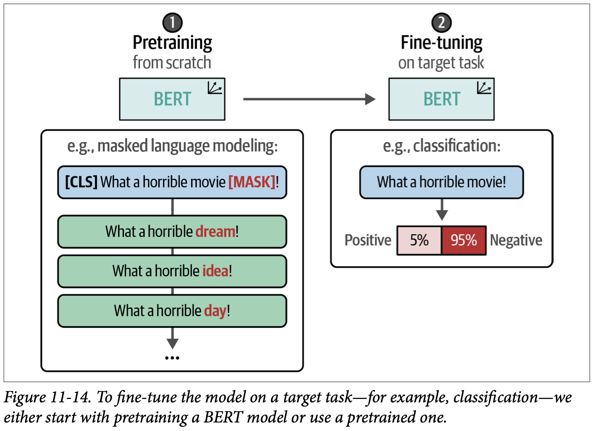
How to read this figure. Step ① "Pretraining from scratch", for example with masked language modeling: the input "[CLS] What a horrible movie [MASK]!" has one word hidden, and the model learns to guess candidates ("What a horrible dream!", "idea", "day" …). Step ② "Fine-tuning on target task", e.g. classification: "What a horrible movie!" → Positive 5%, Negative 95%. The arrow means step 2 starts from the weights step 1 produced.
This two-step approach is used in many applications, but it has a limitation with domain-specific data. The pretrained model is usually trained on very general data, like Wikipedia pages, and may not be tuned to your domain-specific words.
Instead, squeeze another step between them: continue pretraining the already-pretrained BERT model. In other words, keep training BERT with masked language modeling (MLM), the same "guess the hidden word" task, but on data from your domain. The book's example: going from a general BERT model, to a BioBERT model specialised for the medical domain, to a fine-tuned BioBERT model that classifies medication.
This updates the subword representations to be more tuned toward words the model wouldn't have seen (much) before. Continuing pretraining on a pretrained BERT model has been shown to improve performance on classification tasks (footnote 3: Sun et al., "How to fine-tune BERT for text classification?", 2019) and is a worthwhile addition to the fine-tuning pipeline.
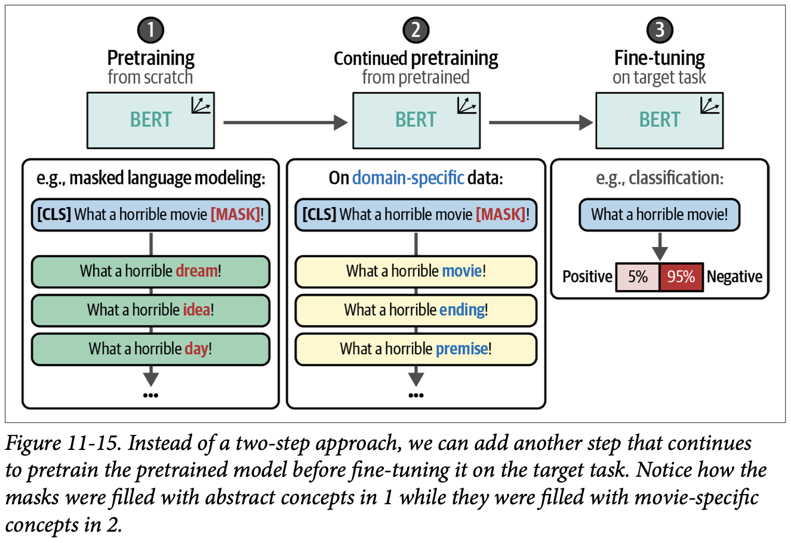
How to read this figure. Same as Figure 11-14 with a new middle column, ② "Continued pretraining from pretrained" on domain-specific data. The same masked sentence is now filled with yellow, movie-flavoured answers: "What a horrible movie/ending/premise!", where step ① gave general, abstract words (dream, idea, day). The task is identical (MLM); only the training text changed, and that is enough to shift what the model expects.
You don't need to pretrain an entire model from scratch: you simply continue pretraining before fine-tuning. This also helps the model adapt to a certain domain or even the lingo of a specific organization. Figure 11-16 shows the "genealogy" of models a company might adopt.
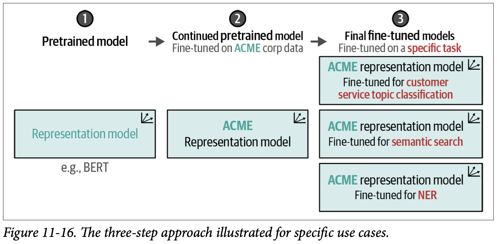
How to read this figure. ① a general pretrained representation model (e.g., BERT). ② an ACME representation model: the same model continued-pretrained on ACME corp's own data. ③ several final fine-tuned models, all branching from the one ACME model: one fine-tuned for customer service topic classification, one for semantic search, one for NER. The expensive domain adaptation happens once (step 2) and is reused by every task (step 3).
The voice-agent example in the last step is ours, not the book's.
A general physician who joins a cardiology hospital. Medical school is pretraining. Before you ask them to triage ECG reports (fine-tuning), they spend a month just reading the hospital's cardiology case files (continued pretraining): no grades, just absorbing the vocabulary. Where it breaks: the doctor remembers medical school perfectly; a model continued-pretrained too long on narrow text can lose some general ability.
MLM needs no labels: the text itself is the answer key (hide a token, predict it). So you can continue pretraining on any amount of raw in-domain text, which is usually far more plentiful than labeled data. Each prediction error updates the token embeddings and attention layers, so domain words (drug names, product codes, company jargon) get more useful vectors, and every later fine-tune starts from a model that already "speaks the language". The tokenizer itself is not changed (plate 9), so new words are still split into the same sub-word pieces; it's their combined meaning that improves.
"Our classifier struggles with internal jargon. Labels are scarce but we have tons of tickets. What would you do?" Do domain-adaptive continued pretraining: run masked-language-model training of the base encoder on the raw tickets (no labels needed), then fine-tune that adapted model on the labeled set. Build it once as a company base model and branch task models off it (topic classification, semantic search, NER), as in the book's ACME example.
The demo applies step 2 (continued pretraining) to bert-base-cased, using the same Rotten Tomatoes reviews as the "domain" data. The model is loaded with a masked-language-modeling head instead of a classification head:
from transformers import AutoTokenizer, AutoModelForMaskedLM
# Load model for masked language modeling (MLM)
model = AutoModelForMaskedLM.from_pretrained("bert-base-cased")
tokenizer = AutoTokenizer.from_pretrained("bert-base-cased")Tokenize the raw sentences and remove the labels, since this is not a supervised task:
def preprocess_function(examples):
return tokenizer(examples["text"], truncation=True)
# Tokenize data
tokenized_train = train_data.map(preprocess_function, batched=True)
tokenized_train = tokenized_train.remove_columns("label")
tokenized_test = test_data.map(preprocess_function, batched=True)
tokenized_test = tokenized_test.remove_columns("label")Earlier the collator was DataCollatorWithPadding, which only pads. Now the collator must also perform the masking. Two methods are common:
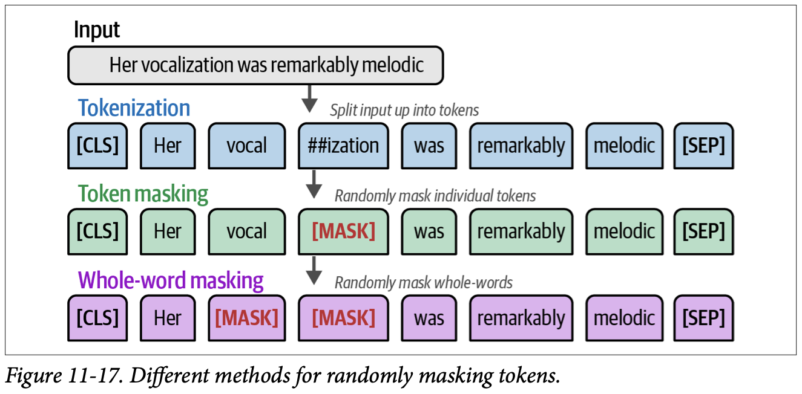
How to read this figure. Input: "Her vocalization was remarkably melodic". Tokenization (blue) splits "vocalization" into vocal + ##ization (## means "continues the previous token"). Token masking (green) replaces just ##ization with [MASK], so the model sees "vocal[MASK]" and can guess the ending from the visible half. Whole-word masking (purple) masks both vocal and ##ization, so the whole word must be inferred from context.
Predicting whole words is generally harder than predicting tokens, which makes the model perform better because it must learn more accurate and precise representations. But it tends to take a bit more time to converge. This example uses token masking (DataCollatorForLanguageModeling) for faster convergence. To switch to whole-word masking, replace it with DataCollatorForWholeWordMask. The masking probability is set with mlm_probability:
from transformers import DataCollatorForLanguageModeling
# Masking Tokens
data_collator = DataCollatorForLanguageModeling(
tokenizer=tokenizer,
mlm=True,
mlm_probability=0.15
)The sub-word splits for sentences 2 and 3 are modelled (WordPiece-style), not the real bert-base-cased output. Special tokens are never masked. In the real collator, a chosen token is replaced by [MASK] 80% of the time, a random token 10%, and left unchanged 10% (beyond the book); this toy always shows [MASK].
# Training arguments for parameter tuning
training_args = TrainingArguments(
"model",
learning_rate=2e-5,
per_device_train_batch_size=16,
per_device_eval_batch_size=16,
num_train_epochs=10,
weight_decay=0.01,
save_strategy="epoch",
report_to="none"
)
# Initialize Trainer
trainer = Trainer(
model=model,
args=training_args,
train_dataset=tokenized_train,
eval_dataset=tokenized_test,
tokenizer=tokenizer,
data_collator=data_collator
)Note: no compute_metrics here; the loss on masked tokens is what is tracked. The book says "we train for 20 epochs and keep the task short", and suggests experimenting with the learning rate and weight decay to see whether they help.
The code sets num_train_epochs=10 while the text says 20 epochs. Trust the code: 10 epochs over ≈8,530 short reviews.
Before training, they save the pretrained tokenizer. The tokenizer is not updated during training, so there's no need to save it afterwards. The model, however, is saved after continued pretraining:
# Save pre-trained tokenizer
tokenizer.save_pretrained("mlm")
# Train model
trainer.train()
# Save updated model
model.save_pretrained("mlm")The new model is in the mlm folder. Normally you'd evaluate it by fine-tuning on a variety of tasks. Here, a quick check: run masking tasks and see if it learned from continued training. First, the original pretrained model on "What a horrible [MASK]!":
from transformers import pipeline
# Load and create predictions
mask_filler = pipeline("fill-mask", model="bert-base-cased")
preds = mask_filler("What a horrible [MASK]!")
# Print results
for pred in preds:
print(f">>> {pred["sequence"]}")The original model suggests general concepts like "idea", "dream" and "day", which make sense. The updated model suggests "movie", "film", "mess", "comedy", "story": it is clearly more biased toward the data we fed it.
A small detail: f">>> {pred["sequence"]}" reuses double quotes inside a double-quoted f-string, which only parses on Python 3.12+ (beyond the book). On older Python, write pred['sequence'].
The next step would be to fine-tune this model on the classification task from the start of the chapter. Just load it from the mlm folder:
from transformers import AutoModelForSequenceClassification
# Fine-tune for classification
model = AutoModelForSequenceClassification.from_pretrained("mlm", num_labels=2)
tokenizer = AutoTokenizer.from_pretrained("mlm")Loading an MLM checkpoint into AutoModelForSequenceClassification keeps the BERT body, drops the MLM head and adds a fresh classification head, so you then train exactly as in plate 3. The book stops here and doesn't report the F1 of this combined pipeline.
Token masking is a fill-in-the-blank test where the blank is "melo___": you can guess "dic" from the first half. Whole-word masking blanks out "_______" entirely, so you must understand the sentence. A harder test makes a better student but takes longer to pass. Where it breaks: students get bored of hard tests; for a model the only cost is more training steps to converge.
The MLM loss is cross-entropy over the vocabulary, computed only at the masked positions (the collator sets the label of every unmasked token to −100, the same "ignore" value you will meet in NER, plate 11: beyond the book's wording). Because the masks are chosen randomly every time a batch is built, 10 epochs see 10 different maskings of each review, so the model can't just memorise the answers.
"Which data collator do you use for which task?" DataCollatorWithPadding for sequence classification (just dynamic padding); DataCollatorForLanguageModeling(mlm=True, mlm_probability=0.15) or DataCollatorForWholeWordMask for continued pretraining; DataCollatorForTokenClassification for NER, because it also pads the label sequences. Whole-word masking is the harder objective that usually gives better representations but converges slower.
## prefix.The last section fine-tunes a pretrained BERT model for NER (named-entity recognition). Instead of classifying entire documents, NER classifies individual tokens and/or words, for example as people and locations. This is especially useful for de-identification and anonymization when the data is sensitive (find the names, then hide them).
NER is similar to the document classification at the start of the chapter. The key difference is in preprocessing and classification: since we classify individual words instead of documents, the data must be prepared at that finer, word-level granularity.
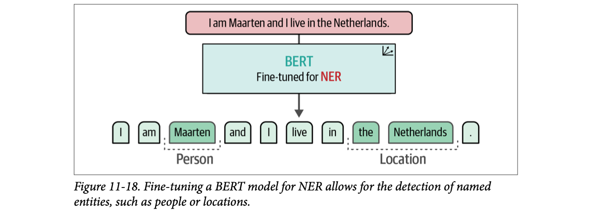
How to read this figure. One sentence, "I am Maarten and I live in the Netherlands.", goes through a BERT fine-tuned for NER. Out comes one box per word. Most stay pale (no entity). "Maarten" is green and bracketed as Person; "the" and "Netherlands" are green and bracketed together as Location: an entity can span more than one word.
The architecture looks like the document classifier, but with a fundamental shift: rather than aggregating or pooling token embeddings into one vector for the document, the model makes a prediction for each individual token in the sequence. And importantly, the "word-level" task actually classifies tokens, the pieces that make up words, not whole words.
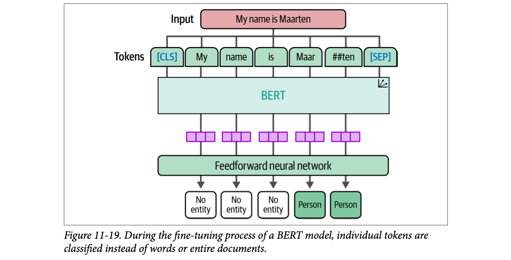
How to read this figure. Compare with Figure 11-3. Input "My name is Maarten" becomes tokens [CLS] My name is Maar ##ten [SEP]. BERT gives one purple vector per token, and the feedforward head now has one output per token (five arrows for the five real tokens): My → No entity, name → No entity, is → No entity, Maar → Person, ##ten → Person. Both pieces of "Maarten" are labelled Person. No pooling step: the head is applied to each token's vector separately.
This figure splits "Maarten" as Maar ##ten for illustration. The real bert-base-cased tokenizer, as printed later in the chapter (and Figure 11-21), gives Ma ##arte ##n.
N token vectors → pool into 1 vector → head → 1 label. Output shape: [batch, num_labels].
N token vectors → head on each → N labels. Output shape: [batch, seq_len, num_labels].
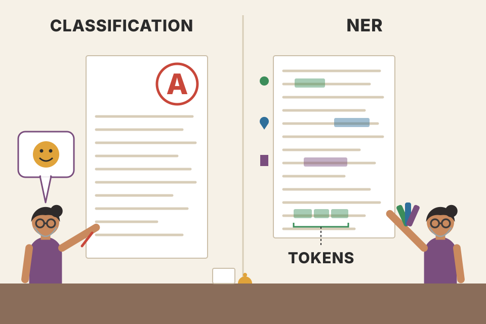
Sentiment classification is a teacher writing one grade on top of an essay. NER is a teacher with a highlighter going through every word: names in green, places in blue, companies in purple. Where it breaks: the teacher highlights words; the model highlights sub-word tokens, so "Maarten" may get three highlights that have to be stitched back into one name.
Each token's final vector already contains context from the whole sentence (BERT's self-attention is bidirectional), so "Washington" can be classified as a person or a location depending on its neighbours even though the head looks at one vector at a time. The head is shared across positions: the same small linear layer (768 → 9 labels here) runs on every token.
"How would you redact PII from call transcripts before storing them for RAG memory?" Run a token-classification (NER) model over each transcript, merge B-/I- tagged tokens back into entity spans using character offsets, and replace PERSON/LOC/ORG (and custom types like phone numbers) with placeholders before embedding. A fine-tuned BERT-sized NER model is fast enough for streaming text. The book flags exactly this: NER for de-identification and anonymization of sensitive data.
The dataset is the English version of CoNLL-2003 (footnote 4: Sang & De Meulder, 2003). It contains several entity types (person, organization, location, miscellaneous, and no entity) and has roughly 14,000 training samples.
# The CoNLL-2003 dataset for NER
dataset = load_dataset("conll2003", trust_remote_code=True)wnut_17: focuses on emerging and rare entities, which are harder to spot.tner/mit_movie_trivia: detects entities like actor, plot and soundtrack.tner/mit_restaurant: detects entities like amenity, dish and cuisine (footnote 5: Liu et al., "Asgard", 2013).The authors call the last two "quite fun to use".
One example from the training set:
example = dataset["train"][848]
example
{'id': '848',
'tokens': ['Dean', 'Palmer', 'hit', 'his', '30th', 'homer', 'for', 'the', 'Rangers', '.'],
'pos_tags': [22, 22, 38, 29, 16, 21, 15, 12, 23, 7],
'chunk_tags': [11, 12, 21, 11, 12, 12, 13, 11, 12, 0],
'ner_tags': [1, 2, 0, 0, 0, 0, 0, 0, 3, 0]}The data gives a label for each word. pos_tags (part-of-speech) and chunk_tags (phrase chunks) are other annotations in the dataset; NER uses only ner_tags, whose numbers map to these entities:
label2id = {
"O": 0, "B-PER": 1, "I-PER": 2, "B-ORG": 3, "I-ORG": 4,
"B-LOC": 5, "I-LOC": 6, "B-MISC": 7, "I-MISC": 8
}
id2label = {index: label for label, index in label2id.items()}The categories: PER (person), ORG (organization), LOC (location), MISC (miscellaneous), and O (no entity). Each entity has a prefix B (beginning) or I (inside). If consecutive tokens are part of the same phrase, the start of the phrase is marked B and the following ones I, showing they belong together and are not separate entities. (This scheme is called BIO tagging; beyond the book's wording.)
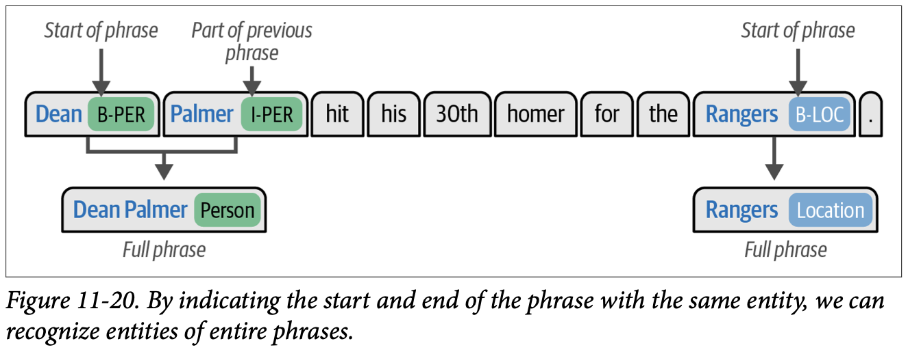
How to read this figure. The sentence from example 848, "Dean Palmer hit his 30th homer for the Rangers.", as word boxes. "Dean" carries B-PER ("Start of phrase"), "Palmer" carries I-PER ("Part of previous phrase"); their brackets merge into the full phrase Dean Palmer → Person, one person, not two. "Rangers" carries B-LOC ("Start of phrase") and becomes a one-word full phrase, Rangers → Location. Every other word has no tag (O).
The figure tags "Rangers" as B-LOC / Location, but the data above gives it ner_tags 3, which is B-ORG (the Texas Rangers baseball team: an organization). The data is right; the figure's label is a slip. The B/I idea it illustrates is unaffected.
The data is split into words, not yet into tokens. Tokenize it further with the same tokenizer used all chapter, bert-base-cased, and load a token classification model with the label maps:
from transformers import AutoModelForTokenClassification
# Load tokenizer
tokenizer = AutoTokenizer.from_pretrained("bert-base-cased")
# Load model
model = AutoModelForTokenClassification.from_pretrained(
"bert-base-cased",
num_labels=len(id2label),
id2label=id2label,
label2id=label2id
)num_labels=len(id2label) = 9 outputs per token. Passing id2label/label2id stores the names in the model config, so later the pipeline prints "B-PER" instead of "LABEL_1".
# Split individual tokens into sub-tokens
token_ids = tokenizer(example["tokens"], is_split_into_words=True)["input_ids"]
sub_tokens = tokenizer.convert_ids_to_tokens(token_ids)
sub_tokens
['[CLS]', 'Dean', 'Palmer', 'hit', 'his', '30th', 'home', '##r', 'for', 'the', 'Rangers', '.', '[SEP]']is_split_into_words=True tells the tokenizer the input is already a list of words. The tokenizer added [CLS] and [SEP] (Chapters 2 and 3), and split "homer" into home + ##r. Now there are 13 tokens but only 10 word labels: the labels are at the word level, the model works at the token level. The fix is to align labels with their sub-tokens during tokenization.
Take the word "Maarten", labelled B-PER. The tokenizer splits it into Ma, ##arte and ##n. Giving all three B-PER would say they are three independent people. Rule: whenever an entity is split into tokens, the first token gets B (beginning) and the following ones get I (inner). So Ma → B-PER, ##arte and ##n → I-PER.
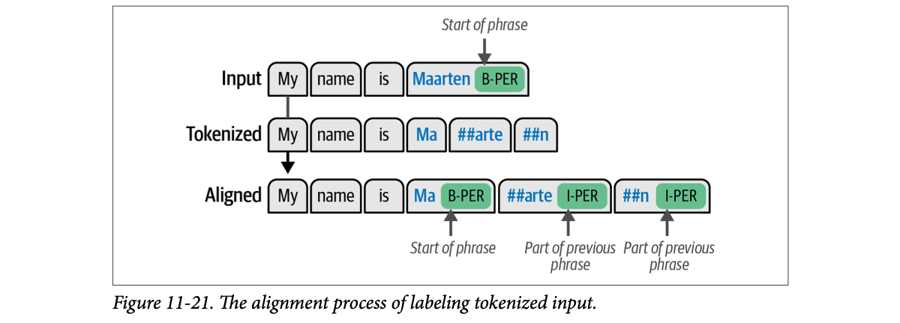
How to read this figure. Three rows. Input: words "My name is Maarten", with Maarten tagged B-PER (start of phrase). Tokenized: "Maarten" becomes three tokens, Ma, ##arte, ##n. Aligned: Ma keeps B-PER (start of phrase); ##arte and ##n get I-PER (part of previous phrase). One person, three tokens, correctly tagged.
align_labels functiondef align_labels(examples):
token_ids = tokenizer(
examples["tokens"],
truncation=True,
is_split_into_words=True
)
labels = examples["ner_tags"]
updated_labels = []
for index, label in enumerate(labels):
# Map tokens to their respective word
word_ids = token_ids.word_ids(batch_index=index)
previous_word_idx = None
label_ids = []
for word_idx in word_ids:
# The start of a new word
if word_idx != previous_word_idx:
previous_word_idx = word_idx
updated_label = -100 if word_idx is None else label[word_idx]
label_ids.append(updated_label)
# Special token is -100
elif word_idx is None:
label_ids.append(-100)
# If the label is B-XXX we change it to I-XXX
else:
updated_label = label[word_idx]
if updated_label % 2 == 1:
updated_label += 1
label_ids.append(updated_label)
updated_labels.append(label_ids)
token_ids["labels"] = updated_labels
return token_ids
tokenized = dataset.map(align_labels, batched=True)word_ids(batch_index=index): for each token, the index of the word it came from, or None for special tokens. For example 848: [None, 0, 1, 2, 3, 4, 5, 5, 6, 7, 8, 9, None] (home and ##r both come from word 5).word_idx != previous_word_idx): copy that word's label; a special token at the start gets −100.word_idx is None (special token, not first): −100. PyTorch's cross-entropy loss ignores label −100 by default, so [CLS], [SEP] and padding never count in the loss.label2id) add 1 to turn it into the matching I- tag (2, 4, 6, 8). O (0) stays 0.# Difference between original and updated labels
print(f"Original: {example["ner_tags"]}")
print(f"Updated: {tokenized["train"][848]["labels"]}")
Original: [1, 2, 0, 0, 0, 0, 0, 0, 3, 0]
Updated: [-100, 1, 2, 0, 0, 0, 0, 0, 0, 0, 3, 0, -100]Extra −100 labels were added for [CLS] and [SEP], and "homer" now has two labels (0, 0) for home and ##r, so the list has 13 entries, one per token.
align_labels token by token
The Maarten tokens are the book's (Figure 11-21); "My name is" as tokens of their own is how the book draws it.
The metric also changes: instead of one prediction per document, there are many predictions per document, one per token. They use Hugging Face's evaluate package and its seqeval metric, which evaluates sequence labelling:
import evaluate
# Load sequential evaluation
seqeval = evaluate.load("seqeval")
def compute_metrics(eval_pred):
# Create predictions
logits, labels = eval_pred
predictions = np.argmax(logits, axis=2)
true_predictions = []
true_labels = []
# Document-level iteration
for prediction, label in zip(predictions, labels):
# Token-level iteration
for token_prediction, token_label in zip(prediction, label):
# We ignore special tokens
if token_label != -100:
true_predictions.append([id2label[token_prediction]])
true_labels.append([id2label[token_label]])
results = seqeval.compute(
predictions=true_predictions, references=true_labels
)
return {"f1": results["overall_f1"]}np.argmax(logits, axis=2): logits are now [documents, tokens, 9 labels], so the argmax is over axis 2 (the label axis), giving one predicted label per token.id2label because seqeval works on "B-PER"-style strings; overall_f1 is the F1 across all entity types.The listing wraps each token in its own list ([id2label[...]]), so seqeval sees every token as a one-token sequence. That makes the score closer to a per-token F1 than the usual entity-span F1, where you'd append one list per document. Either is fine for comparing runs; just know which one you report.
Railway reservation for a family: the booking (word) "Sharma family" has one PNR, but the chart (tokens) lists three seats. The first seat gets "head of booking" (B), the others "same booking" (I). Seats for the TTE's own use ([CLS], [SEP]) are marked −100: don't count them in the passenger tally. Where it breaks: a PNR is assigned by a system that knows the family; the tokenizer splits words by vocabulary statistics, so where the "seats" break is arbitrary.
Two choices exist for continuation sub-tokens: label them (as here, with I-) or mask them with −100 so only the first sub-token is trained and scored. The book labels them, which gives more training signal. Because a word's label ID scheme puts B at odd numbers and I at B+1, the B→I switch is a one-line +1; that only works because of how label2id is ordered.
"How do you handle word-level labels when the tokenizer splits words into sub-words?" Use the fast tokenizer's word_ids() to map each token back to its word. Give the first sub-token the word's label, give continuation sub-tokens the I- version (or −100 to ignore them), and give special tokens −100 so cross-entropy skips them. At inference, merge tokens back into spans using the offsets.
vocal ##ization) that whole-word masking deals with.Instead of DataCollatorWithPadding, NER needs a collator that works at the token level: DataCollatorForTokenClassification.
from transformers import DataCollatorForTokenClassification
# Token-classification DataCollator
data_collator = DataCollatorForTokenClassification(tokenizer=tokenizer)Why a special collator (beyond the book's wording): it pads the labels list too, with −100, so the label sequences stay the same length as the padded token sequences. DataCollatorWithPadding only pads the inputs.
The rest is like the earlier training runs: the same arguments, then the Trainer.
# Training arguments for parameter tuning
training_args = TrainingArguments(
"model",
learning_rate=2e-5,
per_device_train_batch_size=16,
per_device_eval_batch_size=16,
num_train_epochs=1,
weight_decay=0.01,
save_strategy="epoch",
report_to="none"
)
# Initialize Trainer
trainer = Trainer(
model=model,
args=training_args,
train_dataset=tokenized["train"],
eval_dataset=tokenized["test"],
tokenizer=tokenizer,
data_collator=data_collator,
compute_metrics=compute_metrics,
)
trainer.train()
# Evaluate the model on our test data
trainer.evaluate()The book doesn't print the NER evaluation numbers.
Finally, save the model and use it in a pipeline for inference, so you can inspect what happens on specific inputs and decide whether you're satisfied:
from transformers import pipeline
# Save our fine-tuned model
trainer.save_model("ner_model")
# Run inference on the fine-tuned model
token_classifier = pipeline(
"token-classification",
model="ner_model",
)
token_classifier("My name is Maarten.")
[{'entity': 'B-PER', 'score': 0.99534035, 'index': 4, 'word': 'Ma', 'start': 11, 'end': 13},
{'entity': 'I-PER', 'score': 0.9928328, 'index': 5, 'word': '##arte', 'start': 13, 'end': 17},
{'entity': 'I-PER', 'score': 0.9954301, 'index': 6, 'word': '##n', 'start': 17, 'end': 18}]In "My name is Maarten", the word "Maarten" and its sub-tokens are correctly identified as a person.
Hover or tap a token to see its entry. Tokens with label O are not returned by the pipeline, which is why only three dicts come back.
The string is "My name is Maarten." Characters 11–13 = "Ma", 13–17 = "arte", 17–18 = "n". Since the three tokens are B-PER, I-PER, I-PER and their offsets touch, you merge them into one span: characters 11–18 = "Maarten", type PER, with average score (0.9953 + 0.9928 + 0.9954) / 3 ≈ 0.995. The index values (4, 5, 6) count tokens including [CLS] at 0: [CLS]=0, My=1, name=2, is=3, Ma=4.
Beyond the book: pipeline("token-classification", aggregation_strategy="simple") does this merge for you and returns one "PER: Maarten" entry.
A UPI app's "mask sensitive info" feature in a chat: it scans each piece of the message, flags the pieces that form a name, and returns where they are (start/end) so the app can blur exactly those characters. Where it breaks: the model gives confidence scores, not certainty; a production redactor needs a threshold and usually a regex layer for structured items like phone numbers.
The pipeline tokenizes the text, runs the model, takes a softmax over the 9 labels at each token, keeps the argmax, drops O tokens and special tokens, and maps each token back to character offsets using the fast tokenizer's offset mapping. The score is the softmax probability of the chosen label.
"How would you deploy this NER model in a low-latency service?" It is a single forward pass of a ~108M encoder, so batch requests, use the fast tokenizer for offsets, aggregate sub-tokens into spans server-side, and return spans with character offsets and scores. For transcripts from a voice agent, run it on finalised utterances so partial ASR (automatic speech recognition) text doesn't create flickering redactions.
TrainingArguments, different model class and collator.The chapter explored several ways to fine-tune pretrained representation models for specific classification tasks:
Next, Chapter 12 moves on to fine-tuning generative models, in two steps: fine-tune a model to follow instructions, then fine-tune it for human preference.
| Term | Meaning in this chapter |
|---|---|
| Fine-tuning | Continuing to train a pretrained model on labeled data for a specific task. |
| Frozen / nontrainable | Parameters with requires_grad=False: they get no updates during training. |
| Classification head | A small network (here a feedforward layer, or logistic regression in SetFit) on top of the representation model that outputs class scores. |
| Backward pass | Computing gradients from the loss back through the network; it starts at the head and goes through BERT if BERT is trainable. |
| Task-specific model | A representation model plus head trained end-to-end for one task (e.g., sentiment). |
| DataCollator | A class that builds batches and can apply augmentation (padding, masking, label padding). |
| Dynamic padding | Padding each batch only to its own longest sequence (DataCollatorWithPadding). |
| F1 score | Harmonic mean of precision and recall; the chapter's metric throughout. |
| Epoch | One full pass ("round") over the training data. |
| Encoder block | One of BERT-base's 12 layers (0–11): attention, dense network, layer normalization. |
| Few-shot classification | Learning target labels from only a few labeled examples per class. |
| SetFit | Few-shot framework: generate sentence pairs → contrastively fine-tune a sentence-transformer → train a classifier on its embeddings. |
| Positive / negative pair | Two sentences from the same class / from different classes. |
| Contrastive learning | Learning embeddings by pulling similar pairs together and pushing dissimilar pairs apart. |
| MTEB | Massive Text Embedding Benchmark: leaderboard of embedding models across tasks. |
| Zero-shot (SetFit) | No labels: SetFit builds synthetic examples from label names ("This example is happy"). |
| Continued pretraining | Extra MLM training of a pretrained model on domain data, before task fine-tuning. |
| MLM (masked language modeling) | Hide some tokens and train the model to predict them. |
| Token masking / whole-word masking | Mask random tokens (15% here) / mask all sub-tokens of a chosen word. |
| NER | Named-entity recognition: label each token as person, organization, location, misc, or none. |
| B- / I- / O | Beginning of an entity / inside (continuation) of the same entity / no entity. |
| Label alignment | Mapping word-level labels onto sub-word tokens (first sub-token B, rest I). |
| −100 | Label value ignored by the loss; used for special tokens. |
| seqeval | A sequence-labelling evaluation metric (via Hugging Face evaluate), reporting overall_f1. |
| Name | What the chapter does with it |
|---|---|
| Hugging Face Transformers | AutoModelForSequenceClassification, AutoModelForMaskedLM, AutoModelForTokenClassification, AutoTokenizer, TrainingArguments, Trainer, the three data collators, and pipeline("fill-mask") / pipeline("token-classification"). |
| Hugging Face Datasets | load_dataset for rotten_tomatoes and conll2003; .map(..., batched=True) for tokenizing; remove_columns; load_metric("f1"). |
| Hugging Face Evaluate | evaluate.load("seqeval") for token-level NER scoring. |
| bert-base-cased | The base model for supervised classification, freezing, continued pretraining and NER. Pretrained on English Wikipedia + unpublished books. |
| SetFit (library) | sample_dataset, SetFitModel, SetFit TrainingArguments/Trainer; logistic regression head by default, optional differentiable head; zero-shot via synthetic examples. |
| sentence-transformers / all-mpnet-base-v2 | The pretrained sentence-embedding model SetFit fine-tunes; a top model on the MTEB leaderboard at the time. |
| MTEB leaderboard | Used to pick a strong embedding model. |
| BioBERT | Example of a domain-adapted (medical) BERT obtained by continued pretraining. |
| Rotten Tomatoes dataset | 5,331 positive + 5,331 negative movie reviews; used for classification, SetFit and as "domain" data for MLM. |
| CoNLL-2003 | English NER dataset, ~14,000 training samples, PER/ORG/LOC/MISC/O. |
| wnut_17, tner/mit_movie_trivia, tner/mit_restaurant | Other NER datasets: rare/emerging entities; actor/plot/soundtrack; amenity/dish/cuisine. |
| scikit-learn / PyTorch | Any classifier from these can serve as SetFit's step-3 classifier (Figure 11-12). |
spaCy and Flair are common production NER libraries; Microsoft Presidio combines NER models with pattern rules for PII redaction. ModernBERT and DeBERTa-v3 are newer encoder bases often used in place of bert-base-cased for the same fine-tuning recipes.
In Chapter 4 the pretrained models were frozen; only a separate classifier (after the embedding model) learned. Here BERT and a classification head are trained jointly as one architecture, so the backward pass goes from the head through BERT and updates both. F1 went from 0.80 to 0.85.
num_labels when loading AutoModelForSequenceClassification?It sizes the feedforward classification head built on top of the pretrained model: one output per label.
DataCollatorWithPadding do, and why not pad everything to 512?It builds batches and pads each batch only to its longest sequence. Padding everything to the max wastes computation on [PAD] tokens for short reviews.
F1 fell to 0.63 (from 0.85). Only the head's ~1.5k weights get gradients and optimizer updates, so each step is much cheaper, but BERT can't adapt its representations to the task.
index < 165. Which blocks are trainable, and what F1 did it get?Index 165 is where encoder.layer.10 begins (5 embedding tensors + 16 per block). So embeddings and blocks 0–9 are frozen; blocks 10–11, the pooler and the head train. F1 = 0.80.
Gradients flow from the head down. If the frozen part is at the bottom, the backward pass can stop there and you save the most compute; a frozen layer sandwiched in the middle still has gradients passing through it.
16 × 15 / 2 = 120. With num_iterations=20: 20 × 32 = 640, × 2 (a positive and a negative pair each) = 1,280. (The book misprints 640 as 680.)
(1) Sample positive (same-class) and negative (different-class) sentence pairs. (2) Contrastively fine-tune a pretrained SentenceTransformer on them. (3) Embed all sentences with the fine-tuned model and train a classifier (logistic regression by default) on the embeddings.
It generates synthetic examples from the label names (e.g., "The example is happy", "This example is sad") and trains a SetFit model on them.
The general model hasn't learned the medical vocabulary well, so its sub-word representations for domain terms are weak. Continued MLM pretraining on raw medical text (no labels needed) adapts those representations first (general BERT → BioBERT → fine-tuned BioBERT), which has been shown to improve classification.
Whole-word masking is harder (no visible half-word to guess from), so it tends to learn more precise representations, but it takes longer to converge. The book uses token masking at 15% for faster convergence.
Continued pretraining doesn't change the tokenizer (vocabulary and splitting rules), only the model weights.
Ma → B-PER, ##arte → I-PER, ##n → I-PER, so the three tokens are one person, not three. [CLS]/[SEP] get −100, which the loss ignores. In the code, B tags are odd IDs, so continuation tokens get label + 1.
Sentiment pools tokens into one vector → one label per document; NER applies the head to every token → one label per token, and the argmax is over axis 2. The collator becomes DataCollatorForTokenClassification, which also pads the label sequences, and evaluation uses seqeval instead of plain F1.